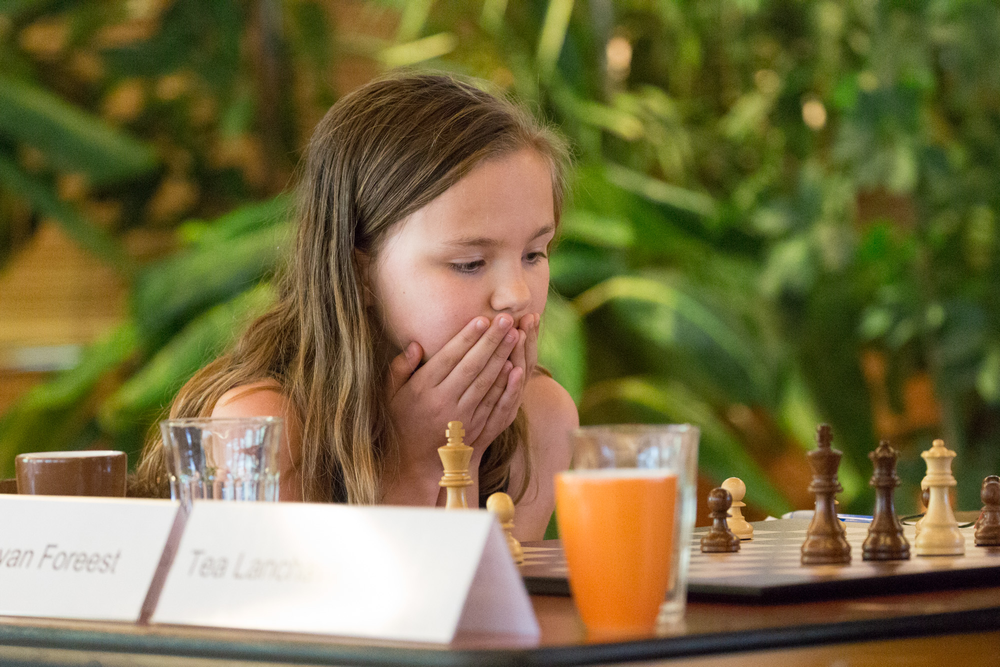

Machteld van Foreest
Family van Foreest
Games
Blog
Media
Sponsors
Contact
Third place Dutch Women's Championship!!!

Picture made by Harry Gielen
My name is Machteld van Foreest. I was born in Groningen on August 22, 2007.
I come from a
chess family
. All my brothers play chess:
Jorden
,
Lucas
,
Pieter
,
Tristan
en
Nanne
.
I play for the
Groninger Combinatie
.
My current chess trainers are
Sipke Ernst
and
Sergey Tiviakov
.
For chess training I use the app
realchess
.
Special Achievements:
2014: Winner of the
Dutch Championship
girls under 10
2017: Shared second place Dutch Championship girls under 20
2017: Winner
Dutch Youth Championship
(boys) under 12
2018: Winner
Dutch Youth Championship
(boys) under 12
2018: Winner
Dutch Youth Championship
(boys) under 14
2018: Shared third place
World Cadets Santiago
under 12
2019: Third place Dutch Women's Championship
More information about my chess achievements can be found on my
Fide page
.
My goal is to become World Chess Champion!! I'm looking for
sponsors
to make this possible.
Sponsor Machteld voor het WK 2021
!!!